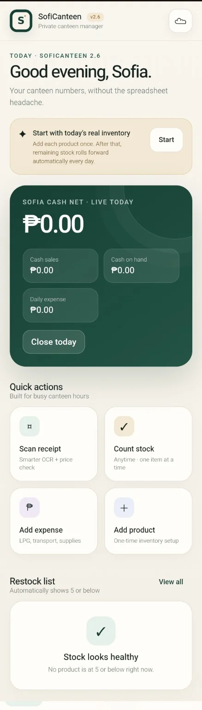
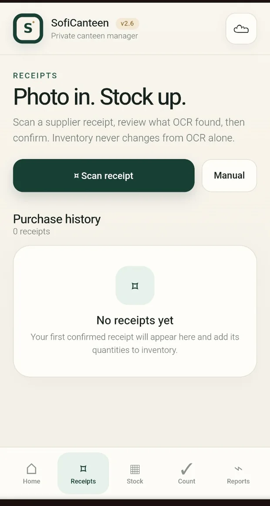
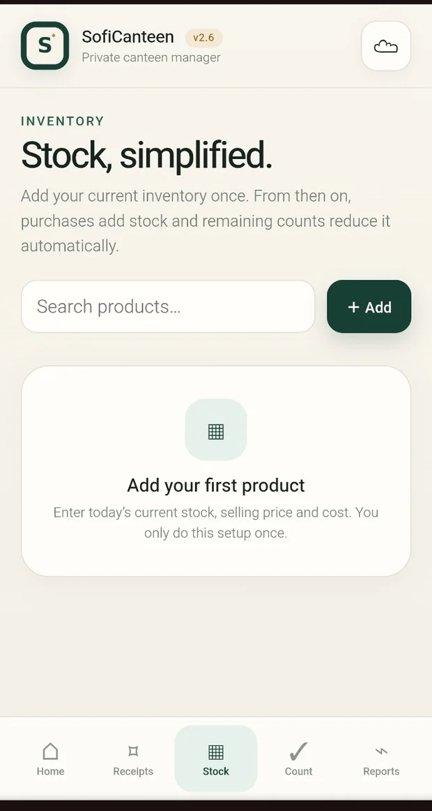
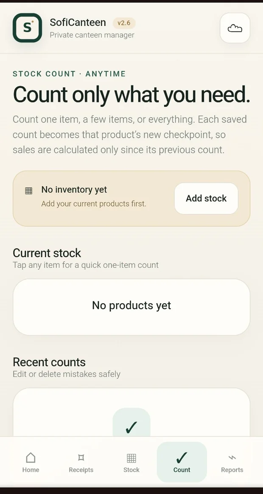
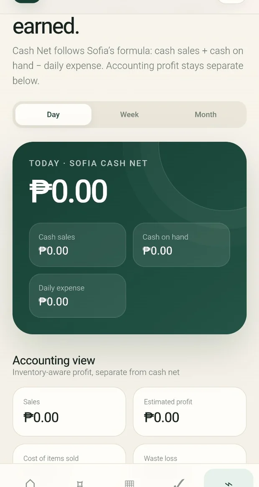

SofiCanteen
A practical canteen management interface for inventory, stock-count checkpoints, receipt review and daily financial visibility.

Why this exists.
Small canteen operators need a quick way to track what was purchased, what remains, and what was spent. SofiCanteen focuses on simple mobile flows without spreadsheet overload.
Key modules
- Receipt review with user confirmation concept
- Inventory setup and stock count checkpoints
- Daily cash, expenses and reporting interface
Built with direction and review.
My role: Product planning, UI decisions, AI-assisted development, feature review, and testing.
Where AI helped: Structured assisted implementation for inventory workflows, data entry, and clear daily reports.
Uploaded screenshots show the initial setup and empty-state interfaces, including no products, no receipts, and zero balances. The screenshots are not proof of completed sales processing.
Current limitation: No real canteen records are used in the portfolio. This media collection shows the setup state rather than filled operational reports.
Inside the project.




Screenshots come from the uploaded development/demo materials. Click any image to expand.
Work that can be inspected.
Explore the demonstration where available, or return to the full portfolio to see more work.